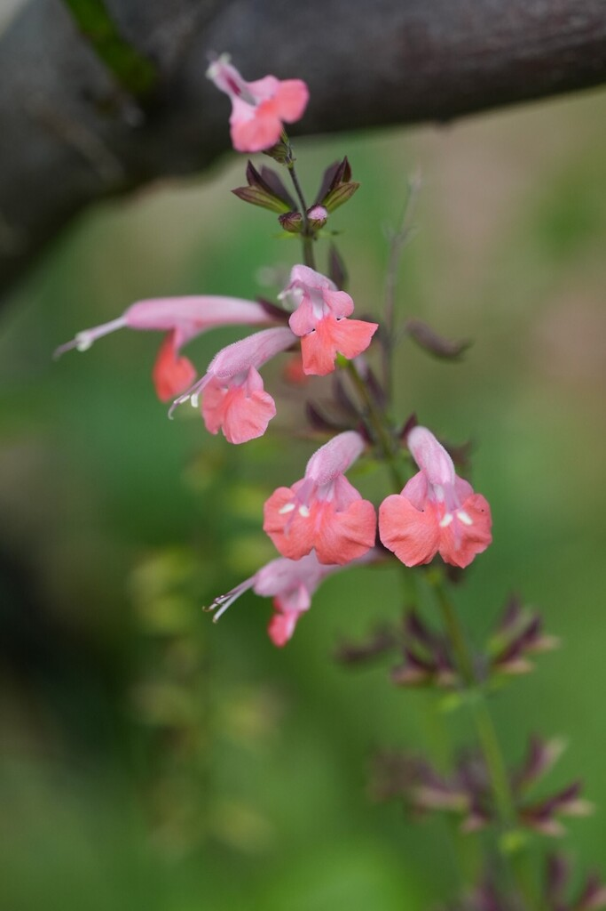

- When a hummingbird probes the flower for nectar, the exserted stamens dust pollen directly onto its head — the plant is essentially using the bird as a flying paintbrush.
- A Florida-native wildflower whose slender scarlet (sometimes pink or white) blooms are built almost exclusively for hummingbirds.
- It is a tireless self-seeder, popping up year after year and filling in gaps in a sunny bed. At Palma Sola Botanical Park, tropical sage is grown primarily in the butterfly garden near the pavilion — a fitting home for a plant that draws so many winged visitors.
- A true sage (Salvia), it carries the family's faintly aromatic foliage.
Native to the southeastern United States, including Florida, and south into Mexico and tropical America. A common wildflower of open woods, clearings, and disturbed ground, and a favorite in native and pollinator gardens.
- Tropical sage is one of Florida's most rewarding native wildflowers for wildlife. Its loose spikes of slender, tubular flowers — usually vivid scarlet, sometimes pink, coral, or white — are shaped and colored for hummingbirds, which probe them for nectar, and they draw butterflies and bees as well.
- The pollination trick is elegant: the stamens in S. coccinea are exserted and immovable, positioned so that as a hummingbird inserts its bill to reach the nectar, they deposit pollen directly onto its head. The bird carries that pollen to the next flower without knowing it, completing the plant's work. Research on S. coccinea has directly observed successful pollen transfer to hummingbirds' heads in exactly this way.
- It is also delightfully easy. The plant blooms over a long season, sets seed freely, and reseeds itself year after year, drifting through a sunny bed and filling in bare ground without becoming a nuisance. That self-sowing habit makes it a low-effort anchor for a pollinator planting.
- As a true Salvia — the sage genus — it carries the family's lightly aromatic foliage, a soft herbal scent when the leaves are brushed.
A top-tier pollinator plant: the tubular red flowers are a magnet for hummingbirds — especially the ruby-throated hummingbird, which migrates through Manatee County in spring and fall — and also feed butterflies and bees over a long bloom season. As a native that reseeds readily, it provides reliable, season-long nectar with little effort.
A soft-stemmed, upright native perennial wildflower, often grown as an annual.
Loose spikes of slender, tubular, two-lipped flowers — with an arching upper hood and a lower landing pad — usually scarlet (also pink, coral, or white), much of the year.
Triangular to heart-shaped, softly hairy, faintly aromatic.
Self-seeds freely, returning and spreading year to year.
Airy spikes of slender red tubular flowers on a soft, upright plant in a sunny spot, often with a hummingbird working the blooms.
Edibility reports are genuinely mixed: the Florida Native Plant Society notes that some people have reported a severe stomach ache after consuming a concentrated extract from the flowers, while others use the leaves and flowers in small amounts as a salad garnish. Not a food plant — and not one to experiment with carelessly.
The plant is not considered toxic to people, dogs, or cats in a normal garden encounter, but eating it in quantity is inadvisable.
Tropical Sage reseeds freely and the FNPS flags it as 'fairly aggressive' in favorable spots. That is not a reason to avoid it — it is one of its best traits in a wildlife garden — but it is worth knowing before you plant it next to a tidy bed where you do not want volunteers.
The park's plant is the straight wild type, which is the most wildlife-productive form. Named cultivars such as 'Coral Nymph' (pink and white bicolor) and 'Snow Nymph' (pure white) are widely available and still attract pollinators, but the red-flowered wild type is what hummingbirds and the widest range of butterflies key in on.
In Central Florida's mild winters, a freeze may knock back top growth, but the root crown often survives and rebounds. Even if the plant is killed entirely, seeds already banked in the soil will send up new volunteers as soon as warm weather returns — making this one of the more freeze-resilient wildflowers in a Manatee County garden.


- © Rhonda Olschefskie (CC-BY-NC), via iNaturalist
- © jsea (CC-BY-NC), via iNaturalist
- © Franky McArthur (CC-BY-NC), via iNaturalist